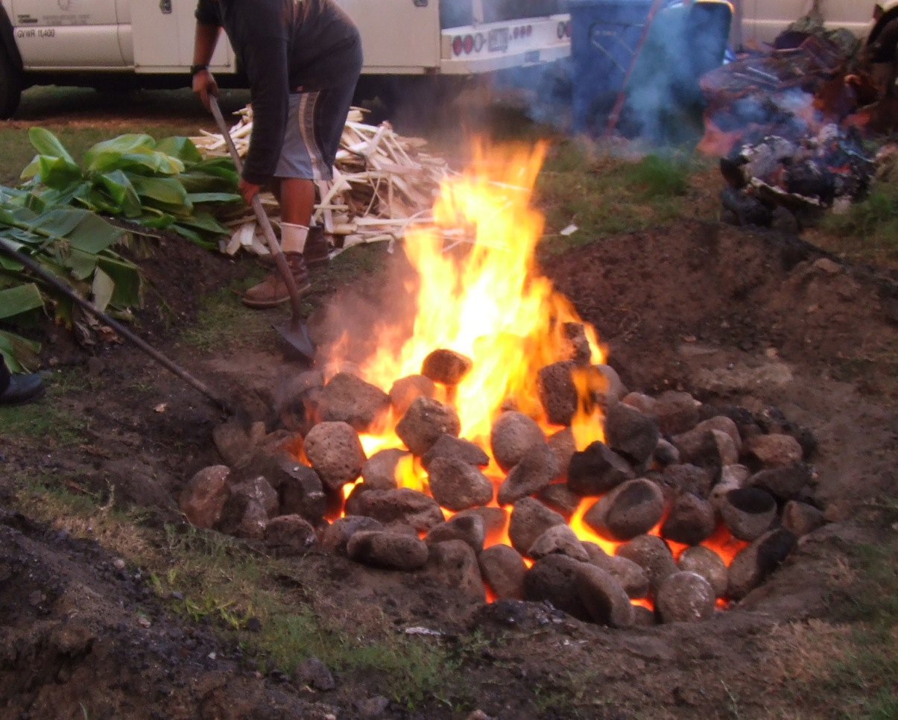
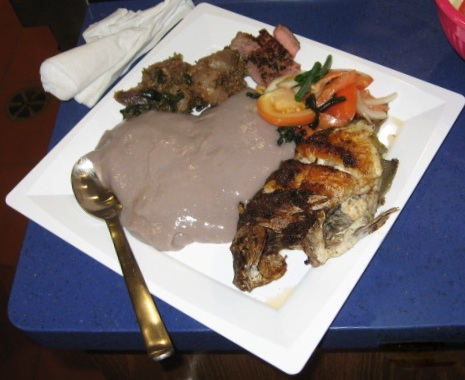

Content Area: Food, Culture, HEALTH, Nutrition, Settling Goals
Standard: Health and Nutrition
- Objective: Appreciate the importance of safety in cooking food.
- Objective: Identify the benefits of specific vitamins and minerals on students’ health and physical abilities.
- Objective: Understand concepts related to health promotion and disease prevention.
1. Traditional Hawaiian cooking is an adventure; pulling kalo from the mud, catching fish, cleaning the pig, scraping opihi between the tides, harvesting banana trees, sweet potato, breadfruit. Cooking in an imu, earth oven, is a great time with friends around an intense fire. But remember: SAFETY FIRST.

Imu built by the Domingo ‘ohana. Credit: Weston Yap
Research the phone number of your local fire station, because we alert the fire department before lighting an imu in our neighborhood.
When starting the fire think about using less lighter fluid and using more kindling, like wood shavings, newspaper. Too much fluid passes the chemical flavor to the food. Lighter fluid’s key ingredients Butane or Napthalene, are distilled from petroleum or coal tar. Just go easy.
2. Identify people in the community with experience building an imu, organizing the food that goes in, and controlling the heat.
3. View this video that shows the steps and team work involved in imu cooking, Hawaiian Imu. min. 1:18. By the Shnaz. Link to Youtube.com.
Understand the cooking action of an imu. The imu cooks food through steam action. The hot stones heat up the water in the banana stalk and leaves and tī leaves. Covering the imu with burlap bags, tarp and soil traps the steam around the food.
4. Learn cures for the kalo itch related to Calcium Oxalate crystals. Before a meal we always sample the lū‘au leaves and the kalo corms before serving it to guests. The itch is no fun.
External, skin itching: Wash area of skin with a solution of cold water and salt, vinegar, or baking soda. Try using anti-itch creams.
Internal, mouth and throat itching: Rinse mouth with a solution of vinegar, salt or baking soda, or milk; spit it out; repeat.
5. Brainstorm on a whiteboard what the students know about the diet related illnesses: diabetes, hypertension, high blood pressure and gout.
Dr. Claire Kuuleilani Hughes explains diabetes:
Type 1 diabetes happens when the body's pancreas stops making insulin. This type can be passed down through a family line, even if the diet is good.
Type 2 diabetes happens when the body cannot use the insulin that it makes. Body weight and food choices can block the body's ability to use insulin.
Without insulin, blood sugar cannot move into the body's cells to be used as fuel by the muscles, brain and heart. So sugar collects and builds up in the blood. This high blood sugar forces the kidneys to overwork, as it tries to get rid of the sugar. Blood sugar rises faster when we eat and drink sugary food like soda, candy and donuts, or starches like white rice and white bread.
6. View this video, Childhood Obesity, min. 8:11. By Hawai‘i student Matthew Shimura. Link to C-Spanvideo.org. This prize winning video was recognized by First Lady Michelle Obama.
Discuss the students’ access to healthy foods in their neighborhood.
Discuss the connection between good diet and athletic performance in the sports the students participate in.
7. Kalo is a source of nutritients that serve a vital role in promoting growth, health, and the ability to learn. Visit the Kalo Nutrition pages of this website. Three examples of key nutrients found in kalo:
Vitamin A maintains good night vision and normal skin health.
Vitamin C boosts the function of the immune system, which may protect against viral infections and perhaps other diseases.
Iron performs regulation of cell growth. A deficiency of iron limits oxygen delivery to cells, resulting in fatigue, poor work performance, and decreased immunity.

Pono ‘ai, Hawaiian food. Credit chefs Kealoha Domingo, Duffy Chang, Jerry Konanui, Kaipo‘i Kelling and Weston Yap.
8. Kupuna wahine (grandma) would yell at us kids, "I saw you never used soap to wash your face and hands. Do it again! Hana hou!" View this video, Sanitation and Cleanliness in Food Service Establishments. min. 3:01. By Safetyinstruction. Link to Youtube.com. Discuss bad food experiences and what was the cause.